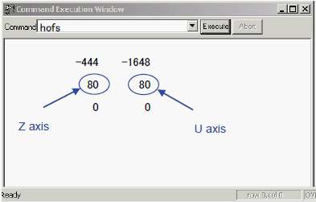

A8-1 How to adjust about hand height of Input arm / Output arm ( 2 hands )
Input arm / Output arm hand height adjustment for NS-6000
Hand Height Adjustment of Input / Output Arm
The height of Hand 1 (Z axis), Hand 2 (U axis) is usually adjusted when teaching. However, you can change the height when there is difference between the pickup and release of small devices or thin devices.
Adjustment (Input Arm)
1. Show the SPEL's [Debug window] panel as when teaching.
2. Input commands in the [Command:] combo box of the [Command Execution Window] dialog.
3. Input Selrb 2 into the combo box and click the <Execute> button. Then, Input Arm is selected. (Input SELBR 3 for Output Arm.)
4. Input hofs into the combo box and click the <Execute> button. Then, the Hofs value is displayed.
5. If you want to lower the pickup height, decrease the values of Z and U axes
shown below. To heighten the pickup height, increase the values of Z and U axes
and rewrite the Hofs value. To change the height by 1 mm, change the value by
50.

[Example 1]
To lower the Hand 1 (Z axis) pickup height by 0.2 mm.
50 × 0.2 = 10 --- Z axis value 80 - 10 = 70
Input hofs - 444, − 1648, 70, 80 into the combo box and click the <Execute> button. Hofs Z axis value is rewritten.
Input hofs into the combo box and click the <Execute> button. Confirm that the Z axis offset value is rewritten.
[Example 2]
To heighten the Hand 2 (U axis) pickup height by 0.4 mm.
50 × 0.4 = 20 --- U axis value 80 + 20 = 100
Input hofs -444,-1648,80,100 into the combo box and click the <Execute> button. Hofs U axis value is rewritten.
Input hofs into the combo box and click the <Execute> button. Confirm that the U axis offset value is rewritten.
6. When the rewrite is completed, go back to the normal operation window by clicking <A> button on the [SPEL_CT] window.
7. Perform the device pickup and check the pickup height.